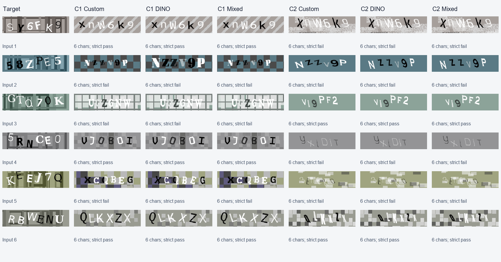
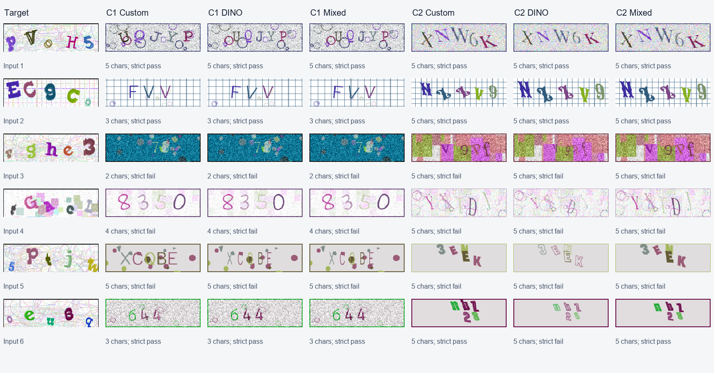
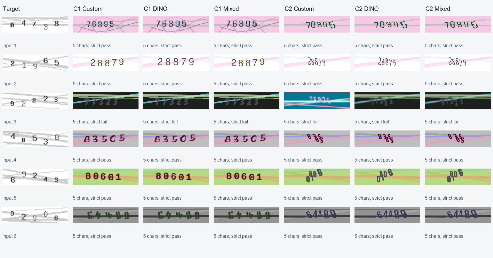

Original epoch-15 CAPRI versus new epoch-20 CAPRI with trained DINO font heads and internal count. Same reference pixels, custom/DINO/mixed controller weights, calibration, candidate-search policy and seed schedules. Six fixed inputs per scheme; all 100 reference images contribute to appearance comparison. Fresh synthetic text is generated independently of target text.
The model-vote length policy is unchanged: at least 60/100 votes selects a common count; otherwise the bounded preview cycles equally through observed predicted counts. Models may therefore generate different lengths. Shared preprocessing is RGB96/bilinear/cap480. Visual previews do not establish reader accuracy. CAPRI 2 training lacked text-ordinal and font width/slant supervision; those outputs remain a limitation of recipe initialization. Controllers and renderer are unchanged.
The strict pass/fail caption is the existing synthetic readability diagnostic. It is not target similarity or OCR accuracy. All 108 examples passed the existing complete/usable render checks; stricter failures are retained. Some controller arms choose identical outputs.
CAPRI 1: {'2': 1, '3': 0, '4': 1, '5': 21, '6': 75, '7': 2, '8': 0}; CAPRI 2: {'2': 0, '3': 0, '4': 0, '5': 2, '6': 89, '7': 7, '8': 2}

CAPRI 1: {'2': 14, '3': 44, '4': 35, '5': 7, '6': 0, '7': 0, '8': 0}; CAPRI 2: {'2': 1, '3': 5, '4': 20, '5': 70, '6': 3, '7': 1, '8': 0}

CAPRI 1: {'2': 0, '3': 0, '4': 9, '5': 91, '6': 0, '7': 0, '8': 0}; CAPRI 2: {'2': 0, '3': 0, '4': 1, '5': 96, '6': 3, '7': 0, '8': 0}
